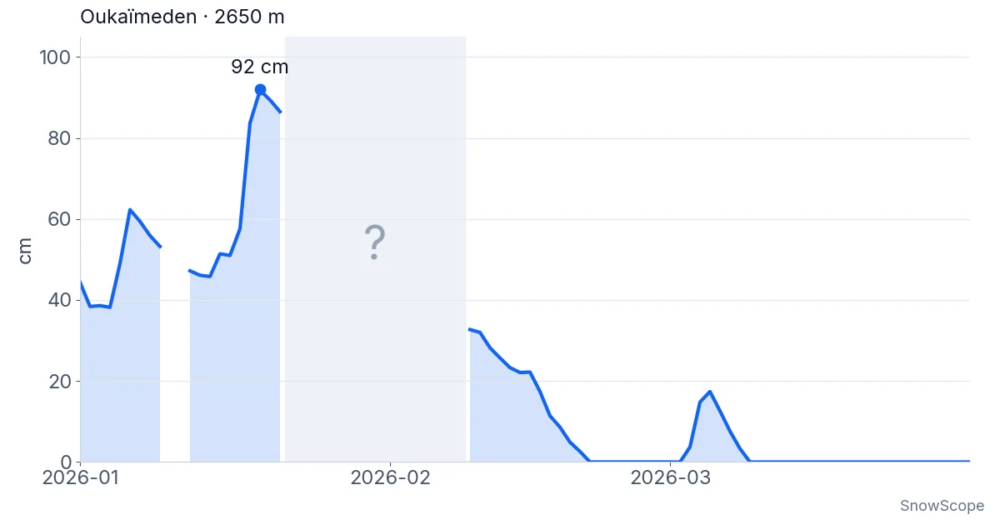

Snow reports · Atlas (Morocco)
Atlas (Morocco): 8 cm: that is the most snow our model finds in the Atlas today. The ski resorts of the Atlas have no snow on their slopes today. Our …
30 km² of snow cover: the Atlas snow report (10 November)
8 cm: that is the most snow our model finds in the Atlas today. The ski resorts of the Atlas have no snow on their slopes today. Our snow model only finds snow on the highest summits: about 30 km² of snow-covered ground, up to 8 cm at most.
Snow cover today
Habri: no snow on the slopes. Michlifen: no snow on the slopes. Oukaïmeden: no snow on the slopes.
The snow cover shrank from 70 km² on 8 November to 30 km² today, and our forecast gives 10 km² on 13 November.

Winter 2025-26 was one of the snowiest in the High Atlas for 46 years. The snow depth measured at Oukaïmeden, the radar view of the whole Tensift mountains, and what each source can and cannot tell.

8 cm: that is the most snow our model finds in the Atlas today. The ski resorts of the Atlas have no snow on their slopes today. Our snow model only …

How much water the Atlas snow may hold in February 2027: the European seasonal forecast is about 3 °C warmer and wetter in the west and south, so snow odds stay low across Morocco's river basins.

The European seasonal forecast makes January 2027 about 2 °C warmer over the Atlas. Our outlook for snow depth, snow water and the water stored for Morocco's rivers.

Bou Iblane is still bare. The European seasonal forecast points to a clearly warmer December, and on every snowy part of the Middle Atlas our odds lean leaner.

No snow yet at Oukaimeden. The European seasonal forecast sees a warmer December over the High Atlas, and our map shows leaner odds on almost every summit.

A practical notebook on Oukaïmeden in the High Atlas: when snow usually comes, how much, which slopes to aim for and how to get there from Marrakesh.

Michlifen, near Ifrane, has snow in short episodes rather than a season. What 46 past winters show, why the usual depth is zero, and how to be there on the right days.

Snow line near 3,710 m from 8 to 12 November: rain at Oukaïmeden and Imlil, snow on Toubkal's summit. Map and chart.

About 65 mm on Toubkal by 12 November, but the 0 °C level stays near 4,000 m: rain at Oukaïmeden and in the valleys, snow only on the top.

The ski resorts of the Atlas have no snow on their slopes today. Our snow model only finds snow on the highest summits: about 80 km² of snow-covered …